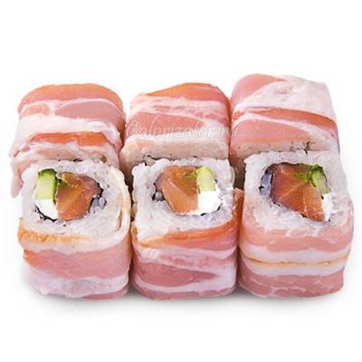
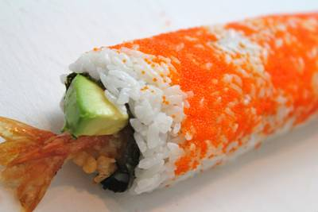

Роллы
|  |
Кунсэй батаконКопченный лосось, бекон, огурец и мягкий сыр |

|
АригатоТёплый ролл, обжаренный в сухарях Панко с копчёным и свежим лососем, огурцом, сливочным сыром, икрой тобико и соусом Унаги. |
|  |
МексиканскийКреветка темпура, огурец и тобико. Острый ролл. |